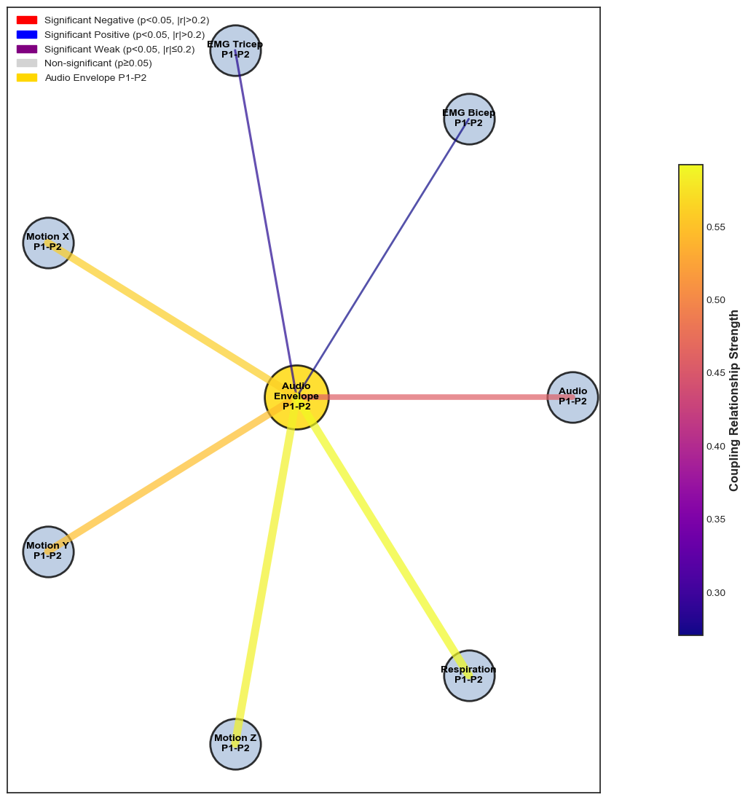

import pandas as pd
import numpy as np
import glob
import os
from scipy import signal
from scipy import stats
from sklearn.metrics import mutual_info_score
import seaborn as sns
import warnings
warnings.filterwarnings('ignore')
import matplotlib.pyplot as plt
import networkx as nx
from matplotlib.patches import FancyArrowPatch
import matplotlib.patches as mpatches
# Your existing functions (keeping them as they are)
def compute_coherence(x, y, fs):
f, Cxy = signal.coherence(x, y, fs)
return f, Cxy
def crosscorr(datax, datay, lag=0):
""" Lag-N cross correlation. Shift datax by N elements. """
return datax.corr(datay.shift(lag))
def compute_mutual_information(x: np.ndarray, y: np.ndarray) -> float:
"""
Compute mutual information between two time series using KDE.
"""
# Clean data
mask = ~np.isnan(x) & ~np.isnan(y)
x = x[mask]
y = y[mask]
if len(x) < 2 or len(y) < 2:
return 0.0
# Standardize the data
x = (x - np.mean(x)) / np.std(x)
y = (y - np.mean(y)) / np.std(y)
# Create KDE estimators
kde_joint = stats.gaussian_kde(np.vstack([x, y]))
kde_x = stats.gaussian_kde(x)
kde_y = stats.gaussian_kde(y)
# Sample points for numerical integration
n_samples = 50
x_range = np.linspace(min(x) - 1, max(x) + 1, n_samples)
y_range = np.linspace(min(y) - 1, max(y) + 1, n_samples)
X, Y = np.meshgrid(x_range, y_range)
positions = np.vstack([X.ravel(), Y.ravel()])
# Evaluate densities
joint_density = kde_joint(positions).reshape(X.shape)
x_density = kde_x(X[0,:])
y_density = kde_y(Y[:,0])
X_density, Y_density = np.meshgrid(x_density, y_density)
# Compute MI
with np.errstate(divide='ignore', invalid='ignore'):
mi_density = joint_density * np.log(joint_density / (X_density * Y_density))
mi = np.nansum(mi_density) * (x_range[1] - x_range[0]) * (y_range[1] - y_range[0])
return max(0, mi) # Ensure non-negative MI
def compute_coupling_statistics(name, motion_ts, sound_ts, time):
"""Your existing coupling statistics function"""
# Ensure inputs are numpy arrays
motion_ts = np.array(motion_ts)
sound_ts = np.array(sound_ts)
time = np.array(time)
# Check if inputs are scalar (single values)
if motion_ts.ndim == 0 or sound_ts.ndim == 0 or time.ndim == 0:
return pd.DataFrame({
'scene': [name],
'lags': [np.nan],
'crosscorr': [np.nan],
}), np.nan, np.nan, np.nan, np.nan, np.nan, np.nan
# Check if inputs have the same length
if len(motion_ts) != len(sound_ts) or len(motion_ts) != len(time):
raise ValueError("motion_ts, sound_ts, and time must have the same length")
# normalize and center the data
motion_ts = (motion_ts - np.min(motion_ts)) / (np.max(motion_ts) - np.min(motion_ts))
motion_ts = motion_ts - np.mean(motion_ts)
sound_ts = (sound_ts - np.min(sound_ts)) / (np.max(sound_ts) - np.min(sound_ts))
sound_ts = sound_ts - np.mean(sound_ts)
# check if values are finite
if not np.all(np.isfinite(motion_ts)) or not np.all(np.isfinite(sound_ts)):
return pd.DataFrame({
'scene': [name],
'lags': [np.nan],
'crosscorr': [np.nan],
}), np.nan, np.nan, np.nan, np.nan, np.nan, np.nan
# Compute sampling frequency
fs = 1/np.mean(np.diff(time))
# compute the average mutual information
mi = []
lags = [-0.3, -0.2, -0.1, 0, 0.1, 0.2, 0.3]
fs = 1/np.mean(np.diff(time))
lags_samples = [int(lag * fs) for lag in lags]
for lag in lags_samples:
if lag < 0:
motsub = motion_ts[:lag]
soundsub = sound_ts[-lag:]
elif lag > 0:
motsub = motion_ts[lag:]
soundsub = sound_ts[:-lag]
else:
motsub = motion_ts
soundsub = sound_ts
# Add smoothing to capture temporal dependencies
window = int(0.1 * fs) # 100ms window
if window > 1:
motsub = np.convolve(motsub, np.ones(window)/window, mode='valid')
soundsub = np.convolve(soundsub, np.ones(window)/window, mode='valid')
mi_value = compute_mutual_information(motsub, soundsub)
mi.append(mi_value)
max_mi = np.max(mi)
optimal_lag = lags[np.argmax(mi)]
#################################################### Coherence
# Compute coherence
f, Cxy = compute_coherence(motion_ts, sound_ts, fs)
# keep all values lower than 10 Hz
mask = f < 10
Cxy = Cxy[mask]
f = f[mask]
# maximum coherence
coherence = np.max(Cxy)
# Frequency of max coherence
f_max = f[np.argmax(Cxy)]
#################################################### Cross-correlation
lag_seconds = 0.3
lag_points = int(lag_seconds * fs)
# Create a range of lags to examine
lags = np.arange(-lag_points, lag_points + 1)
# calc cross-cor
cc = [crosscorr(pd.Series(motion_ts), pd.Series(sound_ts), lag) for lag in lags]
# Calculate cross-correlation
crosscorrdf = pd.DataFrame({
'scene': name,
'lags': lags*(1/fs),
'crosscorr': cc,
})
########## Phase locking value
# Compute analytic signal (using Hilbert transform)
motion_analytic = signal.hilbert(motion_ts)
sound_analytic = signal.hilbert(sound_ts)
# Extract instantaneous phase
motion_phase = np.angle(motion_analytic)
sound_phase = np.angle(sound_analytic)
# Compute phase difference
phase_diff = motion_phase - sound_phase
# compute the plv
plv = np.abs(np.mean(np.exp(1j * phase_diff)))
# make phase_diff a regular list not a numpy array
try:
motion_phase = motion_phase.tolist()[0] if hasattr(motion_phase, 'tolist') else motion_phase[0]
phase_diff = phase_diff.tolist()[0] if hasattr(phase_diff, 'tolist') else phase_diff[0]
except:
motion_phase = np.mean(motion_phase)
phase_diff = np.mean(phase_diff)
return crosscorrdf, coherence, f_max, max_mi, phase_diff, plv, optimal_lag
def calculate_p1_p2_coupling_stats(merged_folder='../merged_filteredtimeseries/', output_file='p1_p2_coupling_statistics.csv'):
"""
Loop through merged time series files and calculate coupling statistics between P1 and P2
"""
# Find all merged CSV files
csv_files = glob.glob(os.path.join(merged_folder, "*.csv"))
print(f"Found {len(csv_files)} files to process")
# Define P1-P2 variable pairs to analyze
p1_modalities = ['Amplitude_Envelope_P1', 'Filtered_ECG_P1', 'Filtered_Respiration_P1', 'Filtered_EMG_Bicep_P1', 'Filtered_EMG_Tricep_P1', 'right_index_x_P1', 'right_index_y_P1', 'right_index_z_P1']
p2_modalities = ['Amplitude_Envelope_P2', 'Filtered_ECG_P2', 'Filtered_Respiration_P2', 'Filtered_EMG_Bicep_P2', 'Filtered_EMG_Tricep_P2', 'right_index_x_P2', 'right_index_y_P2', 'right_index_z_P2']
variable_pairs = []
# Add same-participant, same-modality (if needed for matrix)
for i in range(len(p1_modalities)):
p1_var = p1_modalities[i]
p2_var = p2_modalities[i] # Assumes corresponding P1/P2 vars are at same index
if p1_var.replace('_P1', '') == p2_var.replace('_P2', ''): # Only if same modality
variable_pairs.append((p1_var, p2_var))
# Add ALL cross-participant pairs (same and cross-modality)
for p1_var in p1_modalities:
for p2_var in p2_modalities:
if (p1_var.replace('_P1', '') == p2_var.replace('_P2', '')) and (p1_var.replace('_P1', '') == 'Amplitude_Envelope'):
# This is the P1-P2 envelope, which is handled separately in plotting
# You might want to exclude it here if you only want to compute it once for the scatter plots
pass
else:
variable_pairs.append((p1_var, p2_var))
# Initialize results list
results = []
# Loop through each file
for file_path in csv_files:
print(f"\nProcessing: {os.path.basename(file_path)}")
try:
# Load the data
df = pd.read_csv(file_path)
# Extract metadata from filename and dataframe
filename = os.path.basename(file_path)
# Try to extract condition information
# if filename has NoVision or NoMovement, set to 'NoVision' or 'NoMovement'
condition_vision = 'Vision' if 'NoVision' not in filename else 'NoVision'
condition_movement = 'Movement' if 'NoMovement' not in filename else 'NoMovement'
trial = df['Trial'].iloc[0] if 'Trial' in df.columns else 'Unknown'
# Get time vector
time = df['Time'].values
# Check if we have enough data (at least 3 seconds)
if time.max() - time.min() < 5.0:
print(f" Skipping {filename}: insufficient data duration ({time.max() - time.min():.2f}s)")
continue
# Set up sliding window analysis
window_duration = 5.0 # seconds
step_size = 1.0 # seconds
n_windows = int((time.max() - time.min() - window_duration) / step_size) + 1
print(f" Analyzing {n_windows} windows of {window_duration}s each")
# Loop through each variable pair
for var1, var2 in variable_pairs:
if var1 not in df.columns or var2 not in df.columns:
continue
print(f" Processing {var1} vs {var2}")
# Loop through sliding windows
for window_idx in range(n_windows):
window_start = time.min() + window_idx * step_size
window_end = window_start + window_duration
# Extract window data
window_mask = (time >= window_start) & (time <= window_end)
time_window = time[window_mask]
var1_window = df[var1].values[window_mask]
var2_window = df[var2].values[window_mask]
# Skip if not enough data in window or too many NaNs
if len(time_window) < 100 or np.sum(~np.isnan(var1_window)) < 50 or np.sum(~np.isnan(var2_window)) < 50:
continue
try:
# Calculate coupling statistics
crosscorrdf, coherence, f_max, max_mi, phase_diff, plv, optimal_lag = \
compute_coupling_statistics(filename, var1_window, var2_window, time_window)
# Extract max cross-correlation
max_crosscorr = crosscorrdf['crosscorr'].abs().max() if not crosscorrdf.empty else np.nan
lag_at_max_crosscorr = crosscorrdf.loc[crosscorrdf['crosscorr'].abs().idxmax(), 'lags'] if not crosscorrdf.empty else np.nan
# Store results
result = {
'filename': filename,
'condition_vision': condition_vision,
'condition_movement': condition_movement,
'trial': trial,
'window_idx': window_idx,
'window_start': window_start,
'window_end': window_end,
'var1': var1,
'var2': var2,
'variable_pair_type': classify_variable_pair(var1, var2),
'max_crosscorr': max_crosscorr,
'lag_at_max_crosscorr': lag_at_max_crosscorr,
'max_coherence': coherence,
'freq_at_max_coherence': f_max,
'max_mutual_info': max_mi,
'optimal_lag_mi': optimal_lag,
'phase_locking_value': plv,
'mean_phase_diff': phase_diff,
'n_samples': len(time_window),
'sampling_rate': 1/np.mean(np.diff(time_window))
}
results.append(result)
except Exception as e:
print(f" Error in window {window_idx}: {e}")
continue
except Exception as e:
print(f" Error processing {filename}: {e}")
continue
# Convert to DataFrame
if results:
results_df = pd.DataFrame(results)
# Save to CSV
results_df.to_csv(output_file, index=False)
print(f"\n✓ Saved {len(results_df)} coupling statistics to {output_file}")
# Print summary statistics
print(f"\nSummary:")
print(f" Files processed: {results_df['filename'].nunique()}")
print(f" Variable pairs analyzed: {results_df['variable_pair_type'].nunique()}")
print(f" Total windows analyzed: {len(results_df)}")
print(f" Conditions: {results_df['condition_vision'].unique()} x {results_df['condition_movement'].unique()}")
return results_df
else:
print("No results generated - check your data files and variable names")
return pd.DataFrame()
def classify_variable_pair(var1, var2):
"""
Classify the type of variable pair for easier analysis
"""
# Extract modality information
modalities = []
participants = []
for var in [var1, var2]:
if 'Amplitude_Envelope' in var:
modalities.append('Audio')
elif 'heart_rate' in var:
modalities.append('ECG')
elif 'Respiration' in var:
modalities.append('Respiration')
elif 'EMG' in var:
modalities.append('EMG')
elif 'right_index' in var:
modalities.append('Motion')
else:
modalities.append('Other')
if '_P1' in var:
participants.append('P1')
elif '_P2' in var:
participants.append('P2')
else:
participants.append('Unknown')
# Classify pair type
if participants[0] == participants[1]:
if participants[0] == 'P1':
pair_type = 'Within_P1'
else:
pair_type = 'Within_P2'
else:
pair_type = 'Between_Participants'
if modalities[0] == modalities[1]:
modality_type = f"Same_{modalities[0]}"
else:
modality_type = f"Cross_{modalities[0]}_{modalities[1]}"
return f"{pair_type}_{modality_type}"
def create_modality_network_plots(results_df, output_folder='coupling_plots/'):
"""
Create network visualizations showing P1-P2 modality coupling
Network 1: P1 and P2 modalities as separate nodes with directed edges
Network 2: Envelope coupling vs all other P1-P2 coupling pairs
"""
os.makedirs(output_folder, exist_ok=True)
# Define consistent color scheme for conditions
CONDITION_COLORS = {
'NoVision x Movement': '#e41a1c', # Red
'NoVision x NoMovement': '#377eb8', # Blue
'Vision x Movement': '#4daf4a', # Green
'Vision x NoMovement': '#984ea3' # Purple
}
def get_modality_from_var(var_name):
if 'Amplitude_Envelope' in var_name:
return 'Audio'
elif 'Filtered_ECG' in var_name: # Added Filtered_ECG mapping
return 'Heart Rate'
elif 'Filtered_Respiration' in var_name:
return 'Respiration'
elif 'Filtered_EMG_Bicep' in var_name:
return 'EMG Bicep'
elif 'Filtered_EMG_Tricep' in var_name:
return 'EMG Tricep'
elif 'right_index_x' in var_name:
return 'Motion X'
elif 'right_index_y' in var_name:
return 'Motion Y'
elif 'right_index_z' in var_name:
return 'Motion Z'
else:
return 'Unknown'
# Get P1-P2 coupling data
p1_p2_data = results_df[
(results_df['var1'].str.contains('_P1')) &
(results_df['var2'].str.contains('_P2'))
].copy()
if len(p1_p2_data) == 0:
print("No P1-P2 coupling data found!")
return
# Add modality information
p1_p2_data['modality1'] = p1_p2_data['var1'].apply(get_modality_from_var)
p1_p2_data['modality2'] = p1_p2_data['var2'].apply(get_modality_from_var)
# Get conditions
conditions = p1_p2_data.groupby(['condition_vision', 'condition_movement']).size().reset_index()[['condition_vision', 'condition_movement']]
# ============================================
# CALCULATE GLOBAL MIN/MAX VALUES FOR CONSISTENT SCALING
# ============================================
print("\n=== Calculating Global Min/Max for Consistent Scaling ===")
# Collect ALL MI values across all conditions for Network 1
all_mi_values_network1 = []
for _, cond_row in conditions.iterrows():
vision = cond_row['condition_vision']
movement = cond_row['condition_movement']
cond_data = p1_p2_data[
(p1_p2_data['condition_vision'] == vision) &
(p1_p2_data['condition_movement'] == movement)
]
if len(cond_data) > 0:
valid_mi = cond_data['max_mutual_info'].dropna().values
all_mi_values_network1.extend(valid_mi)
global_mi_min = 0 # MI is always >= 0
global_mi_max = np.percentile(all_mi_values_network1, 95) if len(all_mi_values_network1) > 0 else 2.0
print(f"Global MI range for edges: {global_mi_min:.3f} - {global_mi_max:.3f}")
# ============================================
# NETWORK 1: P1-P2 MODALITY NETWORKS WITH JITTER PLOTS (GLOBAL SCALING)
# ============================================
print("\n=== Creating P1-P2 Modality Networks with Jitter Plots (Global Scaling) ===")
for _, cond_row in conditions.iterrows():
vision = cond_row['condition_vision']
movement = cond_row['condition_movement']
cond_name = f"{vision} x {movement}"
print(f" Creating network with jitter plot for: {cond_name}")
# Get data for this condition
cond_data = p1_p2_data[
(p1_p2_data['condition_vision'] == vision) &
(p1_p2_data['condition_movement'] == movement)
]
if len(cond_data) == 0:
continue
# Create subplot layout: network on left, jitter plot on right
fig, (ax_net, ax_jitter) = plt.subplots(1, 2, figsize=(24, 12))
# ============================================
# LEFT PANEL: NETWORK PLOT
# ============================================
# Create directed graph
G = nx.DiGraph()
# Get unique modalities
modalities = sorted(list(set(cond_data['modality1'].unique()) |
set(cond_data['modality2'].unique())))
modalities = [m for m in modalities if m != 'Unknown']
# Add nodes for P1 and P2 versions of each modality
for modality in modalities:
G.add_node(f"{modality}_P1", participant='P1', modality=modality)
G.add_node(f"{modality}_P2", participant='P2', modality=modality)
# Add edges based on coupling strength
edge_weights = []
for _, row in cond_data.iterrows():
p1_mod = row['modality1']
p2_mod = row['modality2']
mi_value = row['max_mutual_info']
if not np.isnan(mi_value) and p1_mod != 'Unknown' and p2_mod != 'Unknown':
G.add_edge(f"{p1_mod}_P1", f"{p2_mod}_P2", weight=mi_value)
edge_weights.append(mi_value)
if len(edge_weights) > 0:
# Position nodes in two columns (P1 left, P2 right)
pos = {}
y_positions = np.linspace(1, 0, len(modalities))
for i, modality in enumerate(modalities):
pos[f"{modality}_P1"] = (0, y_positions[i])
pos[f"{modality}_P2"] = (1, y_positions[i])
# Node colors and sizes
node_colors = []
node_sizes = []
for node in G.nodes():
if '_P1' in node:
node_colors.append('lightblue')
else:
node_colors.append('lightcoral')
node_sizes.append(3000)
# Edge colors and widths based on MI strength (GLOBAL MIN/MAX)
edges = G.edges()
edge_weights = [G[u][v]['weight'] for u, v in edges]
# Calculate normalized values once for consistent scaling
if len(edge_weights) > 0 and global_mi_max > global_mi_min:
normalized_values = [(w - global_mi_min) / (global_mi_max - global_mi_min) for w in edge_weights]
edge_widths = [1 + 8 * norm_val for norm_val in normalized_values] # 1-9 width range
edge_colors = [plt.cm.viridis(norm_val) for norm_val in normalized_values]
else:
edge_widths = [5] * len(edge_weights) # Default width
edge_colors = ['gray'] * len(edge_weights)
# Draw network
nx.draw_networkx_nodes(G, pos, node_color=node_colors, node_size=node_sizes,
ax=ax_net, alpha=0.8, edgecolors='black', linewidths=2)
# Draw edges with varying thickness and color
for i, (u, v) in enumerate(edges):
if i < len(edge_widths):
x1, y1 = pos[u]
x2, y2 = pos[v]
# Use pre-calculated color and width (both scaled identically)
arrow = FancyArrowPatch((x1, y1), (x2, y2),
connectionstyle="arc3,rad=0.1",
arrowstyle='->', mutation_scale=20,
linewidth=edge_widths[i],
color=edge_colors[i],
alpha=0.8)
ax_net.add_patch(arrow)
# Add labels for nodes
labels = {}
for node in G.nodes():
modality = node.replace('_P1', '').replace('_P2', '')
participant = 'P1' if '_P1' in node else 'P2'
labels[node] = f"{modality}\n({participant})"
nx.draw_networkx_labels(G, pos, labels, font_size=12, font_weight='bold', ax=ax_net)
# Add participant group labels
ax_net.text(0, 1.1, 'P1 Modalities', ha='center', va='center',
fontsize=18, fontweight='bold',
bbox=dict(boxstyle='round', facecolor='lightblue', alpha=0.7))
ax_net.text(1, 1.1, 'P2 Modalities', ha='center', va='center',
fontsize=18, fontweight='bold',
bbox=dict(boxstyle='round', facecolor='lightcoral', alpha=0.7))
# Add colorbar with GLOBAL scale for edge weights
sm = plt.cm.ScalarMappable(cmap=plt.cm.viridis,
norm=plt.Normalize(vmin=global_mi_min, vmax=global_mi_max))
sm.set_array([])
cbar = plt.colorbar(sm, ax=ax_net, shrink=0.6, pad=0.1)
cbar.set_label('Mutual Information (Global Scale)', fontsize=14, fontweight='bold')
cbar.ax.tick_params(labelsize=12)
ax_net.set_xlim(-0.3, 1.3)
ax_net.set_ylim(-0.2, 1.3)
ax_net.set_aspect('equal')
ax_net.axis('off')
ax_net.set_title(f'P1-P2 Modality Coupling Network\n{cond_name}',
fontsize=20, fontweight='bold', pad=20)
# ============================================
# RIGHT PANEL: JITTER PLOT
# ============================================
# Categorize P1-P2 pairs
envelope_data = []
within_modality_data = []
cross_modality_data = []
for _, row in cond_data.iterrows():
mod1 = row['modality1']
mod2 = row['modality2']
mi_val = row['max_mutual_info']
if np.isnan(mi_val):
continue
# Categorize the pair
if mod1 == 'Audio' and mod2 == 'Audio':
envelope_data.append(mi_val)
elif mod1 == mod2: # Same modality (but not audio)
within_modality_data.append(mi_val)
else: # Different modalities
cross_modality_data.append(mi_val)
# Create jitter plot
categories = []
values = []
colors = []
if len(envelope_data) > 0:
categories.extend(['Envelope\nP1-P2'] * len(envelope_data))
values.extend(envelope_data)
colors.extend(['gold'] * len(envelope_data))
if len(within_modality_data) > 0:
categories.extend(['Within-Modality\nP1-P2'] * len(within_modality_data))
values.extend(within_modality_data)
colors.extend(['lightgreen'] * len(within_modality_data))
if len(cross_modality_data) > 0:
categories.extend(['Cross-Modality\nP1-P2'] * len(cross_modality_data))
values.extend(cross_modality_data)
colors.extend(['lightcoral'] * len(cross_modality_data))
if len(values) > 0:
# Convert to DataFrame for easier plotting
jitter_df = pd.DataFrame({
'category': categories,
'mi_value': values,
'color': colors
})
# Plot jitter plot
category_names = jitter_df['category'].unique()
for i, cat in enumerate(category_names):
cat_data = jitter_df[jitter_df['category'] == cat]
# Add jitter to x-axis
x_jitter = np.random.normal(i, 0.1, len(cat_data))
ax_jitter.scatter(x_jitter, cat_data['mi_value'],
c=cat_data['color'].iloc[0], s=60, alpha=0.7,
edgecolors='black', linewidth=0.5)
# Add mean line
mean_val = cat_data['mi_value'].mean()
ax_jitter.plot([i-0.3, i+0.3], [mean_val, mean_val],
'k-', linewidth=3, alpha=0.8)
ax_jitter.set_xticks(range(len(category_names)))
ax_jitter.set_xticklabels(category_names, fontsize=14, fontweight='bold')
ax_jitter.set_ylabel('Mutual Information', fontsize=16, fontweight='bold')
ax_jitter.set_title(f'MI Distribution by Coupling Type\n{cond_name}',
fontsize=18, fontweight='bold')
ax_jitter.grid(True, alpha=0.3)
ax_jitter.tick_params(axis='both', which='major', labelsize=12)
# Set y-axis to match global scale
ax_jitter.set_ylim(global_mi_min, global_mi_max)
plt.tight_layout()
# Save plot
safe_condition = cond_name.replace(' ', '_').replace('x', 'vs')
plt.savefig(os.path.join(output_folder, f'modality_network_with_jitter_{safe_condition}.png'),
dpi=300, bbox_inches='tight', facecolor='white')
# also svg
plt.savefig(os.path.join(output_folder, f'modality_network_with_jitter_{safe_condition}.svg'),
dpi=300, bbox_inches='tight', facecolor='white')
plt.close()
print("\n✓ Network visualizations created successfully!")
print(f" - P1-P2 modality networks with jitter plots showing MI distributions")
print(f" - Envelope correlation networks with mini scatter plots")
print(f" - Edge thickness and colors scaled using global/local scales as appropriate")
print(f" - Global MI range: {global_mi_min:.3f} - {global_mi_max:.3f}")
# Remove the envelope network section from the complete plotting function
print("\n✓ All plots saved successfully!")
print(f" - Envelope overview with consistent colors and separate phase plots")
print(f" - Cross-modality matrices with proper scaling")
print(f" - Individual scatter plots for each modality x condition combination")
print(f" - P1-P2 modality networks with jitter plots")
print(f" - Envelope correlation networks with scatter plots")
def create_complete_coupling_plots(results_df, output_folder='coupling_plots/'):
"""
Create comprehensive coupling analysis plots including:
1. Envelope overview with proper cross-correlation lines and consistent colors
2. Separate cross-modality P1-P2 matrix for each condition with proper scaling
3. Separate scatter plots for audio P1-P2 vs each other modality P1-P2 pair PER CONDITION
4. Phase plots separated per condition
5. NEW: Network visualizations for modality coupling
"""
import matplotlib.pyplot as plt
import seaborn as sns
import numpy as np
from scipy import stats
import pandas as pd
import os
os.makedirs(output_folder, exist_ok=True)
plt.style.use('seaborn-white')
# Define consistent color scheme for conditions
CONDITION_COLORS = {
'NoVision x Movement': '#e41a1c', # Red
'NoVision x NoMovement': '#377eb8', # Blue
'Vision x Movement': '#4daf4a', # Green
'Vision x NoMovement': '#984ea3' # Purple
}
# Print available variables to debug
print("\n=== Data Analysis ===")
print(f"Data shape: {results_df.shape}")
# Get all unique P1 and P2 variables
p1_vars = sorted([v for v in results_df['var1'].unique() if '_P1' in v])
p2_vars = sorted([v for v in results_df['var2'].unique() if '_P2' in v])
print(f"\nP1 variables found:")
for v in p1_vars:
print(f" - {v}")
print(f"\nP2 variables found:")
for v in p2_vars:
print(f" - {v}")
# Updated modality extraction function (ensuring heart rate is properly mapped)
def get_modality_from_var(var_name):
if 'Amplitude_Envelope' in var_name:
return 'Audio'
elif 'Filtered_ECG' in var_name: # Map both heart_rate and Filtered_ECG
return 'Heart Rate'
elif 'Filtered_Respiration' in var_name:
return 'Respiration'
elif 'Filtered_EMG_Bicep' in var_name:
return 'EMG Bicep'
elif 'Filtered_EMG_Tricep' in var_name:
return 'EMG Tricep'
elif 'right_index_x' in var_name:
return 'Motion X'
elif 'right_index_y' in var_name:
return 'Motion Y'
elif 'right_index_z' in var_name:
return 'Motion Z'
else:
return 'Unknown'
# ============================================
# 1. MODALITY COUPLING OVERVIEWS (FOR EACH P1-P2 PAIR)
# ============================================
print("\n=== Creating Modality Overview Plots ===")
# Find all P1-P2 modality pairs
p1_p2_pairs = results_df[
(results_df['var1'].str.contains('_P1')) &
(results_df['var2'].str.contains('_P2'))
].copy()
# Get unique modality pairs
p1_p2_pairs['modality1'] = p1_p2_pairs['var1'].apply(get_modality_from_var)
p1_p2_pairs['modality2'] = p1_p2_pairs['var2'].apply(get_modality_from_var)
# Find same-modality P1-P2 pairs
same_modality_pairs = p1_p2_pairs[p1_p2_pairs['modality1'] == p1_p2_pairs['modality2']]
unique_modalities = same_modality_pairs['modality1'].unique()
print(f"Creating overview plots for {len(unique_modalities)} modalities: {list(unique_modalities)}")
for modality in unique_modalities:
print(f" Creating overview for: {modality}")
# Get data for this modality
modality_data = same_modality_pairs[same_modality_pairs['modality1'] == modality].copy()
if len(modality_data) == 0:
continue
modality_data['condition'] = modality_data['condition_vision'].astype(str) + ' x ' + modality_data['condition_movement'].astype(str)
conditions = sorted(modality_data['condition'].unique())
# Create main figure with updated layout for phase subplots
fig = plt.figure(figsize=(24, 20))
# Panel 1: Mutual Information
ax1 = plt.subplot(3, 3, 1)
data_by_condition = [modality_data[modality_data['condition'] == cond]['max_mutual_info'].dropna().values
for cond in conditions]
if all(len(d) > 0 for d in data_by_condition):
parts = ax1.violinplot(data_by_condition, positions=range(len(conditions)),
showmeans=False, showmedians=True, showextrema=False)
for pc in parts['bodies']:
pc.set_facecolor('lightcoral')
pc.set_alpha(0.7)
for i, cond in enumerate(conditions):
cond_data = data_by_condition[i]
x = np.random.normal(i, 0.04, size=len(cond_data))
color = CONDITION_COLORS.get(cond, 'gray')
ax1.scatter(x, cond_data, alpha=0.7, s=40, color=color)
ax1.set_xticks(range(len(conditions)))
ax1.set_xticklabels(conditions, rotation=45, ha='right', fontsize=16, fontweight='bold')
ax1.set_ylabel('Mutual Information', fontsize=18, fontweight='bold')
ax1.set_title(f'Mutual Information for {modality} P1-P2', fontsize=20, fontweight='bold')
ax1.grid(True, alpha=0.3)
ax1.tick_params(axis='both', which='major', labelsize=16)
# Panel 2: Cross-correlation AS LINES (consistent colors)
ax2 = plt.subplot(3, 3, 2)
# Create lag bins for averaging
lag_bins = np.linspace(-0.3, 0.3, 13)
lag_centers = (lag_bins[:-1] + lag_bins[1:]) / 2
for i, cond in enumerate(conditions):
cond_data = modality_data[modality_data['condition'] == cond]
color = CONDITION_COLORS.get(cond, 'gray')
if len(cond_data) > 0:
# Bin the data
mean_corrs = []
std_corrs = []
for j in range(len(lag_bins)-1):
mask = (cond_data['lag_at_max_crosscorr'] >= lag_bins[j]) & \
(cond_data['lag_at_max_crosscorr'] < lag_bins[j+1])
bin_corrs = cond_data.loc[mask, 'max_crosscorr'].values
if len(bin_corrs) > 0:
mean_corrs.append(np.mean(bin_corrs))
std_corrs.append(np.std(bin_corrs) / np.sqrt(len(bin_corrs)))
else:
mean_corrs.append(np.nan)
std_corrs.append(np.nan)
# Plot line
mean_corrs = np.array(mean_corrs)
std_corrs = np.array(std_corrs)
valid = ~np.isnan(mean_corrs)
if np.sum(valid) > 1:
ax2.plot(lag_centers[valid], mean_corrs[valid],
'o-', color=color, linewidth=4, markersize=10,
label=cond)
# Add error bands
ax2.fill_between(lag_centers[valid],
mean_corrs[valid] - std_corrs[valid],
mean_corrs[valid] + std_corrs[valid],
alpha=0.2, color=color)
ax2.axhline(y=0, color='black', linestyle='-', linewidth=0.5)
ax2.axvline(x=0, color='black', linestyle='--', linewidth=0.5, alpha=0.5)
ax2.set_xlabel('Lag (s)', fontsize=18, fontweight='bold')
ax2.set_ylabel('Cross-correlation', fontsize=18, fontweight='bold')
ax2.set_title(f'Cross-correlation for {modality} P1-P2', fontsize=20, fontweight='bold')
ax2.legend(loc='best', fontsize=14)
ax2.grid(True, alpha=0.3)
ax2.set_xlim(-0.35, 0.35)
ax2.tick_params(axis='both', which='major', labelsize=16)
# Panel 3: Phase Locking Value
ax3 = plt.subplot(3, 3, 3)
plv_data = [modality_data[modality_data['condition'] == cond]['phase_locking_value'].dropna().values
for cond in conditions]
if all(len(d) > 0 for d in plv_data):
parts = ax3.violinplot(plv_data, positions=range(len(conditions)),
showmeans=False, showmedians=True, showextrema=False)
for pc in parts['bodies']:
pc.set_facecolor('lightblue')
pc.set_alpha(0.7)
for i, cond in enumerate(conditions):
cond_data = plv_data[i]
x = np.random.normal(i, 0.04, size=len(cond_data))
color = CONDITION_COLORS.get(cond, 'gray')
ax3.scatter(x, cond_data, alpha=0.7, s=40, color=color)
ax3.set_xticks(range(len(conditions)))
ax3.set_xticklabels(conditions, rotation=45, ha='right', fontsize=16, fontweight='bold')
ax3.set_ylabel('Phase Locking Value', fontsize=18, fontweight='bold')
ax3.set_title(f'Phase Locking Value for {modality} P1-P2', fontsize=20, fontweight='bold')
ax3.grid(True, alpha=0.3)
ax3.tick_params(axis='both', which='major', labelsize=16)
# Panels 4-7: Phase Distribution per condition (separate polar plots)
phase_positions = [(3, 3, 4), (3, 3, 5), (3, 3, 7), (3, 3, 8)] # Skip middle position
for i, cond in enumerate(conditions):
if i >= len(phase_positions):
break
ax_phase = plt.subplot(*phase_positions[i], projection='polar')
color = CONDITION_COLORS.get(cond, 'gray')
cond_data = modality_data[modality_data['condition'] == cond]
if 'mean_phase_diff' in cond_data.columns:
phases = cond_data['mean_phase_diff'].dropna().values
if len(phases) > 0:
bins = np.linspace(-np.pi, np.pi, 36)
hist, _ = np.histogram(phases, bins=bins)
hist = hist / (len(phases) * (bins[1] - bins[0])) # Density
theta = (bins[:-1] + bins[1:]) / 2
ax_phase.bar(theta, hist, width=bins[1]-bins[0],
alpha=0.7, color=color, edgecolor='black', linewidth=0.5)
# Add mean direction arrow
mean_angle = np.angle(np.mean(np.exp(1j * phases)))
mean_length = np.abs(np.mean(np.exp(1j * phases)))
ax_phase.arrow(mean_angle, 0, 0, mean_length * max(hist) * 0.8,
head_width=0.1, head_length=max(hist)*0.1,
fc='red', ec='red', linewidth=2)
ax_phase.set_theta_zero_location('N')
ax_phase.set_title(f'{cond}\nPhase Distribution', pad=20, fontsize=18, fontweight='bold')
ax_phase.grid(True, alpha=0.3)
ax_phase.tick_params(axis='both', which='major', labelsize=14)
plt.tight_layout()
# Save with modality-specific filename
safe_modality = modality.replace(' ', '_').replace('/', '_')
plt.savefig(os.path.join(output_folder, f'{safe_modality}_coupling_overview.png'),
dpi=300, bbox_inches='tight', facecolor='white')
# also save as svg
plt.savefig(os.path.join(output_folder, f'{safe_modality}_coupling_overview.svg'),
dpi=300, bbox_inches='tight', facecolor='white')
plt.close()
# ============================================
# 2. SEPARATE CROSS-MODALITY P1-P2 MATRIX FOR EACH CONDITION
# ============================================
print("\n=== Creating Separate Cross-Modality Matrices ===")
# Get all P1-P2 pairs
p1_p2_data = results_df[
(results_df['var1'].str.contains('_P1')) &
(results_df['var2'].str.contains('_P2'))
].copy()
if len(p1_p2_data) > 0:
# Add modality columns
p1_p2_data['modality1'] = p1_p2_data['var1'].apply(get_modality_from_var)
p1_p2_data['modality2'] = p1_p2_data['var2'].apply(get_modality_from_var)
# Get all unique modalities (excluding Unknown)
all_modalities = sorted(list(set(p1_p2_data['modality1'].unique()) |
set(p1_p2_data['modality2'].unique())))
all_modalities = [m for m in all_modalities if m != 'Unknown']
print(f"Modalities found: {all_modalities}")
# Get conditions
conditions = p1_p2_data.groupby(['condition_vision', 'condition_movement']).size().reset_index()[['condition_vision', 'condition_movement']]
# Calculate global min/max for consistent scaling across conditions
all_values = []
for _, cond_row in conditions.iterrows():
vision = cond_row['condition_vision']
movement = cond_row['condition_movement']
cond_data = p1_p2_data[
(p1_p2_data['condition_vision'] == vision) &
(p1_p2_data['condition_movement'] == movement)
]
if len(cond_data) > 0:
all_values.extend(cond_data['max_mutual_info'].dropna().values)
global_vmin = 0
global_vmax = np.percentile(all_values, 95) if len(all_values) > 0 else 2.0
print(f"Using global scale: {global_vmin:.3f} to {global_vmax:.3f}")
# Create separate plot for each condition
for _, cond_row in conditions.iterrows():
vision = cond_row['condition_vision']
movement = cond_row['condition_movement']
cond_name = f"{vision} x {movement}"
print(f" Creating matrix for: {cond_name}")
# Create individual figure for this condition - MUCH LARGER
fig, ax = plt.subplots(1, 1, figsize=(20, 18))
# Get data for this condition
cond_data = p1_p2_data[
(p1_p2_data['condition_vision'] == vision) &
(p1_p2_data['condition_movement'] == movement)
]
# Create matrix
matrix = np.full((len(all_modalities), len(all_modalities)), np.nan)
for i, p2_mod in enumerate(all_modalities):
for j, p1_mod in enumerate(all_modalities):
pair_data = cond_data[
(cond_data['modality1'] == p1_mod) &
(cond_data['modality2'] == p2_mod)
]
if len(pair_data) > 0:
matrix[i, j] = pair_data['max_mutual_info'].mean()
# Plot heatmap with proper scaling
mask = np.isnan(matrix)
# Use a more contrastive colormap
cmap = plt.cm.viridis # High contrast colormap
# Calculate annotation font size based on matrix size
n_modalities = len(all_modalities)
if n_modalities <= 5:
annot_fontsize = 24
elif n_modalities <= 7:
annot_fontsize = 20
else:
annot_fontsize = 16
sns.heatmap(matrix, annot=True, fmt='.3f', cmap=cmap,
mask=mask,
cbar_kws={'label': 'Mutual Information', 'shrink': 0.6},
xticklabels=all_modalities, yticklabels=all_modalities,
ax=ax, square=True,
vmin=global_vmin, vmax=global_vmax,
annot_kws={'fontsize': annot_fontsize, 'fontweight': 'bold'},
linewidths=2.0, linecolor='white')
# size font of matrix labels
# MUCH larger fonts for labels and title
ax.set_xlabel('P1 Modality', fontsize=32, fontweight='bold', labelpad=25)
ax.set_ylabel('P2 Modality', fontsize=32, fontweight='bold', labelpad=25)
ax.set_title(f'P1-P2 Cross-Modality Coupling - {cond_name}',
fontsize=36, fontweight='bold', pad=80)
# Larger tick labels with proper spacing
ax.set_xticklabels(ax.get_xticklabels(), rotation=45, ha='right',
fontsize=26, fontweight='bold')
ax.set_yticklabels(ax.get_yticklabels(), rotation=0,
fontsize=26, fontweight='bold')
# Customize colorbar with larger fonts
cbar = ax.collections[0].colorbar
cbar.ax.tick_params(labelsize=24)
cbar.set_label('Mutual Information', fontsize=28, fontweight='bold')
# Add extra padding to prevent cutoff
fig.subplots_adjust(top=0.88)
# Save individual condition plot
safe_condition = cond_name.replace(' ', '_').replace('x', 'vs')
plt.savefig(os.path.join(output_folder, f'cross_modality_matrix_{safe_condition}.png'),
dpi=300, facecolor='white', pad_inches=1.5 )
# also svg
plt.savefig(os.path.join(output_folder, f'cross_modality_matrix_{safe_condition}.svg'),
dpi=300, facecolor='white', pad_inches=1.5 )
plt.close()
# ============================================
# 3. SEPARATE AUDIO P1-P2 vs EACH OTHER MODALITY P1-P2 SCATTER PLOTS PER CONDITION
# ============================================
print("\n=== Creating Individual Audio vs Modality Scatter Plots Per Condition ===")
# Get envelope coupling data
envelope_coupling = results_df[
(results_df['var1'] == 'Amplitude_Envelope_P1') &
(results_df['var2'] == 'Amplitude_Envelope_P2')
].copy()
if len(envelope_coupling) == 0:
print("No envelope coupling data found!")
return
# Average per trial/condition/window
envelope_avg = envelope_coupling.groupby(
['trial', 'condition_vision', 'condition_movement', 'window_idx']
)['max_mutual_info'].mean().reset_index()
# Find all P1-P2 pairs (excluding audio)
all_p1_p2_pairs = []
print("\nChecking for P1-P2 pairs:")
# Method 1: Look for exact P1-P2 matches
for p1_var in p1_vars:
if 'Amplitude_Envelope' in p1_var:
continue
# Find matching P2 variable
p1_base = p1_var.replace('_P1', '')
p2_var = p1_base + '_P2'
if p2_var in p2_vars:
# Check if data exists
pair_exists = len(results_df[
(results_df['var1'] == p1_var) &
(results_df['var2'] == p2_var)
]) > 0
if pair_exists:
modality = get_modality_from_var(p1_var)
all_p1_p2_pairs.append((p1_var, p2_var, modality))
print(f" ✓ Found: {p1_var} → {p2_var} ({modality})")
# Get all condition combinations
all_conditions = envelope_avg.groupby(['condition_vision', 'condition_movement']).size().reset_index()[['condition_vision', 'condition_movement']]
print(f"\nCreating separate scatter plots for envelope coupling P1-P2 versus coupling {len(all_p1_p2_pairs)} modalities x {len(all_conditions)} conditions:")
# Create separate plots for P1-P2 MI envelope vs each modality P1-P2 pair per condition
for p1_var, p2_var, modality in all_p1_p2_pairs:
for _, cond_row in all_conditions.iterrows():
vision = cond_row['condition_vision']
movement = cond_row['condition_movement']
cond_name = f"{vision} x {movement}"
print(f" Creating plot for: {modality} - {cond_name}")
# Create individual figure for this modality and condition
fig, ax = plt.subplots(1, 1, figsize=(7, 10))
# set the size excplittly to make it square
fig.set_size_inches(7, 7)
# Get modality data
mod_data = results_df[
(results_df['var1'] == p1_var) &
(results_df['var2'] == p2_var) &
(results_df['condition_vision'] == vision) &
(results_df['condition_movement'] == movement)
].copy()
if len(mod_data) > 0:
# Average per trial/window
mod_avg = mod_data.groupby(
['trial', 'window_idx']
)['max_mutual_info'].mean().reset_index()
# Get corresponding envelope data for this condition
env_cond = envelope_avg[
(envelope_avg['condition_vision'] == vision) &
(envelope_avg['condition_movement'] == movement)
]
# Merge with envelope
merged = pd.merge(
env_cond,
mod_avg,
on=['trial', 'window_idx'],
suffixes=('_env', '_mod')
)
if len(merged) > 0:
x = merged['max_mutual_info_env'].values
y = merged['max_mutual_info_mod'].values
# Remove NaN
mask = ~(np.isnan(x) | np.isnan(y))
x = x[mask]
y = y[mask]
if len(x) > 2:
# Plot with condition color
color = CONDITION_COLORS.get(cond_name, 'gray')
ax.scatter(x, y, alpha=0.7, s=120, color=color,
edgecolors='black', linewidth=1.0, label=cond_name)
# Add regression line
slope, intercept, r_value, p_value, std_err = stats.linregress(x, y)
line_x = np.array([x.min(), x.max()])
line_y = slope * line_x + intercept
ax.plot(line_x, line_y, 'k--', linewidth=4, alpha=0.8)
# Add statistics with larger font
ax.text(0.05, 0.95, f'r = {r_value:.3f}\np = {p_value:.3f}\nn = {len(x)}',
transform=ax.transAxes, verticalalignment='top',
fontsize=14, fontweight='bold',
bbox=dict(boxstyle='round', facecolor='wheat', alpha=0.8))
ax.legend(fontsize=20, loc='upper right')
else:
ax.text(0.5, 0.5, f'Insufficient data (n={len(x)})',
ha='center', va='center', transform=ax.transAxes,
fontsize=14, fontweight='bold')
else:
ax.text(0.5, 0.5, 'No matched data',
ha='center', va='center', transform=ax.transAxes,
fontsize=14, fontweight='bold')
else:
ax.text(0.5, 0.5, f'No {modality} data for {cond_name}',
ha='center', va='center', transform=ax.transAxes,
fontsize=14, fontweight='bold')
ax.set_xlabel('MI (Audio Envelope P1-P2)', fontsize=28, fontweight='bold')
ax.set_ylabel(f'MI ({modality} P1-P2)', fontsize=28, fontweight='bold')
ax.set_title(f'{cond_name}',
fontsize=32, fontweight='bold')
ax.grid(True, alpha=0.3)
# Increase tick label sizes
ax.tick_params(axis='both', which='major', labelsize=24)
# Set equal aspect ratio
#ax.set_aspect('equal', adjustable='box')
plt.tight_layout(pad=2.0)
# Save individual plot
safe_modality = modality.replace(' ', '_').replace('/', '_')
safe_condition = cond_name.replace(' ', '_').replace('x', 'vs')
plt.savefig(os.path.join(output_folder, f'audio_vs_{safe_modality}_{safe_condition}_scatter_MI.png'),
dpi=300, bbox_inches='tight', facecolor='white', pad_inches=1)
# also save as svg
plt.savefig(os.path.join(output_folder, f'audio_vs_{safe_modality}_{safe_condition}_scatter_MI.svg'),
dpi=300, bbox_inches='tight', facecolor='white', pad_inches=1)
plt.close()
# ============================================
# 4. NEW: CREATE NETWORK VISUALIZATIONS
# ============================================
print("\n=== Creating Network Visualizations ===")
create_modality_network_plots(results_df, output_folder)
print("\n✓ All plots saved successfully!")
print(f" - Overview plots for {len(unique_modalities)} modalities: {list(unique_modalities)}")
print(f" - Cross-modality matrices with proper scaling")
print(f" - Individual scatter plots for each modality x condition combination")
print(f" - P1-P2 modality networks with jitter plots showing MI distributions")
print(f" - Envelope correlation networks with mini scatter plots")MMLAB PLOTS MULTIMODAL PLOT BONANZA
We lean on several key measurments here to determine relationships between modalities.
Coherence: Spectral coherence is a measure of the correlation between two signals in the frequency domain.
Cross-correlation: Cross-correlation is a measure of the similarity between two signals as a function of the time-lag applied to one of them.
Mutual information: Mutual information quantifies the amount of information obtained about one random variable through another random variable. It is a measure of dependency, linear or non-linear.
Phase locking value (PLV): PLV is a measure of the consistency of phase differences between two signals over time. It is often used in neuroscience to assess functional connectivity between brain regions.
Phases: Phase analysis involves examining the phase relationships between signals, which can provide insights into synchronization and timing relationships.
Correlation: Expression of linear relationships between two variables (this may be used if we want to look at whether more coupling between p1-p2 for modality X is predictive of more coupling in modality Y).
merged_folder = '../4a_PROCESSED/merged_filteredtimeseries/' # Update this path
output_file = './p1_p2_coupling_statistics.csv'
# Calculate coupling statistics
overwrite = True # Set to True to recalculate, False to skip if file exists
# check if already exist and overwrite = False
if overwrite or not os.path.exists(output_file):
print(f"File {output_file} already exists. Set overwrite=True to recalculate.")
results_df = calculate_p1_p2_coupling_stats(merged_folder, output_file)
File ./p1_p2_coupling_statistics.csv already exists. Set overwrite=True to recalculate.
Found 20 files to process
Processing: NoVisionMovement_Trial0.csv
Analyzing 8 windows of 5.0s each
Processing Amplitude_Envelope_P1 vs Amplitude_Envelope_P2
Processing Filtered_ECG_P1 vs Filtered_ECG_P2
Processing Filtered_Respiration_P1 vs Filtered_Respiration_P2
Processing Filtered_EMG_Bicep_P1 vs Filtered_EMG_Bicep_P2
Processing Filtered_EMG_Tricep_P1 vs Filtered_EMG_Tricep_P2
Processing right_index_x_P1 vs right_index_x_P2
Processing right_index_y_P1 vs right_index_y_P2
Processing right_index_z_P1 vs right_index_z_P2
Processing Amplitude_Envelope_P1 vs Filtered_ECG_P2
Processing Amplitude_Envelope_P1 vs Filtered_Respiration_P2
Processing Amplitude_Envelope_P1 vs Filtered_EMG_Bicep_P2
Processing Amplitude_Envelope_P1 vs Filtered_EMG_Tricep_P2
Processing Amplitude_Envelope_P1 vs right_index_x_P2
Processing Amplitude_Envelope_P1 vs right_index_y_P2
Processing Amplitude_Envelope_P1 vs right_index_z_P2
Processing Filtered_ECG_P1 vs Amplitude_Envelope_P2
Processing Filtered_ECG_P1 vs Filtered_ECG_P2
Processing Filtered_ECG_P1 vs Filtered_Respiration_P2
Processing Filtered_ECG_P1 vs Filtered_EMG_Bicep_P2
Processing Filtered_ECG_P1 vs Filtered_EMG_Tricep_P2
Processing Filtered_ECG_P1 vs right_index_x_P2
Processing Filtered_ECG_P1 vs right_index_y_P2
Processing Filtered_ECG_P1 vs right_index_z_P2
Processing Filtered_Respiration_P1 vs Amplitude_Envelope_P2
Processing Filtered_Respiration_P1 vs Filtered_ECG_P2
Processing Filtered_Respiration_P1 vs Filtered_Respiration_P2
Processing Filtered_Respiration_P1 vs Filtered_EMG_Bicep_P2
Processing Filtered_Respiration_P1 vs Filtered_EMG_Tricep_P2
Processing Filtered_Respiration_P1 vs right_index_x_P2
Processing Filtered_Respiration_P1 vs right_index_y_P2
Processing Filtered_Respiration_P1 vs right_index_z_P2
Processing Filtered_EMG_Bicep_P1 vs Amplitude_Envelope_P2
Processing Filtered_EMG_Bicep_P1 vs Filtered_ECG_P2
Processing Filtered_EMG_Bicep_P1 vs Filtered_Respiration_P2
Processing Filtered_EMG_Bicep_P1 vs Filtered_EMG_Bicep_P2
Processing Filtered_EMG_Bicep_P1 vs Filtered_EMG_Tricep_P2
Processing Filtered_EMG_Bicep_P1 vs right_index_x_P2
Processing Filtered_EMG_Bicep_P1 vs right_index_y_P2
Processing Filtered_EMG_Bicep_P1 vs right_index_z_P2
Processing Filtered_EMG_Tricep_P1 vs Amplitude_Envelope_P2
Processing Filtered_EMG_Tricep_P1 vs Filtered_ECG_P2
Processing Filtered_EMG_Tricep_P1 vs Filtered_Respiration_P2
Processing Filtered_EMG_Tricep_P1 vs Filtered_EMG_Bicep_P2
Processing Filtered_EMG_Tricep_P1 vs Filtered_EMG_Tricep_P2
Processing Filtered_EMG_Tricep_P1 vs right_index_x_P2
Processing Filtered_EMG_Tricep_P1 vs right_index_y_P2
Processing Filtered_EMG_Tricep_P1 vs right_index_z_P2
Processing right_index_x_P1 vs Amplitude_Envelope_P2
Processing right_index_x_P1 vs Filtered_ECG_P2
Processing right_index_x_P1 vs Filtered_Respiration_P2
Processing right_index_x_P1 vs Filtered_EMG_Bicep_P2
Processing right_index_x_P1 vs Filtered_EMG_Tricep_P2
Processing right_index_x_P1 vs right_index_x_P2
Processing right_index_x_P1 vs right_index_y_P2
Processing right_index_x_P1 vs right_index_z_P2
Processing right_index_y_P1 vs Amplitude_Envelope_P2
Processing right_index_y_P1 vs Filtered_ECG_P2
Processing right_index_y_P1 vs Filtered_Respiration_P2
Processing right_index_y_P1 vs Filtered_EMG_Bicep_P2
Processing right_index_y_P1 vs Filtered_EMG_Tricep_P2
Processing right_index_y_P1 vs right_index_x_P2
Processing right_index_y_P1 vs right_index_y_P2
Processing right_index_y_P1 vs right_index_z_P2
Processing right_index_z_P1 vs Amplitude_Envelope_P2
Processing right_index_z_P1 vs Filtered_ECG_P2
Processing right_index_z_P1 vs Filtered_Respiration_P2
Processing right_index_z_P1 vs Filtered_EMG_Bicep_P2
Processing right_index_z_P1 vs Filtered_EMG_Tricep_P2
Processing right_index_z_P1 vs right_index_x_P2
Processing right_index_z_P1 vs right_index_y_P2
Processing right_index_z_P1 vs right_index_z_P2
Processing: NoVisionMovement_Trial1.csv
Analyzing 8 windows of 5.0s each
Processing Amplitude_Envelope_P1 vs Amplitude_Envelope_P2
Processing Filtered_ECG_P1 vs Filtered_ECG_P2
Processing Filtered_Respiration_P1 vs Filtered_Respiration_P2
Processing Filtered_EMG_Bicep_P1 vs Filtered_EMG_Bicep_P2
Processing Filtered_EMG_Tricep_P1 vs Filtered_EMG_Tricep_P2
Processing right_index_x_P1 vs right_index_x_P2
Processing right_index_y_P1 vs right_index_y_P2
Processing right_index_z_P1 vs right_index_z_P2
Processing Amplitude_Envelope_P1 vs Filtered_ECG_P2
Processing Amplitude_Envelope_P1 vs Filtered_Respiration_P2
Processing Amplitude_Envelope_P1 vs Filtered_EMG_Bicep_P2
Processing Amplitude_Envelope_P1 vs Filtered_EMG_Tricep_P2
Processing Amplitude_Envelope_P1 vs right_index_x_P2
Processing Amplitude_Envelope_P1 vs right_index_y_P2
Processing Amplitude_Envelope_P1 vs right_index_z_P2
Processing Filtered_ECG_P1 vs Amplitude_Envelope_P2
Processing Filtered_ECG_P1 vs Filtered_ECG_P2
Processing Filtered_ECG_P1 vs Filtered_Respiration_P2
Processing Filtered_ECG_P1 vs Filtered_EMG_Bicep_P2
Processing Filtered_ECG_P1 vs Filtered_EMG_Tricep_P2
Processing Filtered_ECG_P1 vs right_index_x_P2
Processing Filtered_ECG_P1 vs right_index_y_P2
Processing Filtered_ECG_P1 vs right_index_z_P2
Processing Filtered_Respiration_P1 vs Amplitude_Envelope_P2
Processing Filtered_Respiration_P1 vs Filtered_ECG_P2
Processing Filtered_Respiration_P1 vs Filtered_Respiration_P2
Processing Filtered_Respiration_P1 vs Filtered_EMG_Bicep_P2
Processing Filtered_Respiration_P1 vs Filtered_EMG_Tricep_P2
Processing Filtered_Respiration_P1 vs right_index_x_P2
Processing Filtered_Respiration_P1 vs right_index_y_P2
Processing Filtered_Respiration_P1 vs right_index_z_P2
Processing Filtered_EMG_Bicep_P1 vs Amplitude_Envelope_P2
Processing Filtered_EMG_Bicep_P1 vs Filtered_ECG_P2
Processing Filtered_EMG_Bicep_P1 vs Filtered_Respiration_P2
Processing Filtered_EMG_Bicep_P1 vs Filtered_EMG_Bicep_P2
Processing Filtered_EMG_Bicep_P1 vs Filtered_EMG_Tricep_P2
Processing Filtered_EMG_Bicep_P1 vs right_index_x_P2
Processing Filtered_EMG_Bicep_P1 vs right_index_y_P2
Processing Filtered_EMG_Bicep_P1 vs right_index_z_P2
Processing Filtered_EMG_Tricep_P1 vs Amplitude_Envelope_P2
Processing Filtered_EMG_Tricep_P1 vs Filtered_ECG_P2
Processing Filtered_EMG_Tricep_P1 vs Filtered_Respiration_P2
Processing Filtered_EMG_Tricep_P1 vs Filtered_EMG_Bicep_P2
Processing Filtered_EMG_Tricep_P1 vs Filtered_EMG_Tricep_P2
Processing Filtered_EMG_Tricep_P1 vs right_index_x_P2
Processing Filtered_EMG_Tricep_P1 vs right_index_y_P2
Processing Filtered_EMG_Tricep_P1 vs right_index_z_P2
Processing right_index_x_P1 vs Amplitude_Envelope_P2
Processing right_index_x_P1 vs Filtered_ECG_P2
Processing right_index_x_P1 vs Filtered_Respiration_P2
Processing right_index_x_P1 vs Filtered_EMG_Bicep_P2
Processing right_index_x_P1 vs Filtered_EMG_Tricep_P2
Processing right_index_x_P1 vs right_index_x_P2
Processing right_index_x_P1 vs right_index_y_P2
Processing right_index_x_P1 vs right_index_z_P2
Processing right_index_y_P1 vs Amplitude_Envelope_P2
Processing right_index_y_P1 vs Filtered_ECG_P2
Processing right_index_y_P1 vs Filtered_Respiration_P2
Processing right_index_y_P1 vs Filtered_EMG_Bicep_P2
Processing right_index_y_P1 vs Filtered_EMG_Tricep_P2
Processing right_index_y_P1 vs right_index_x_P2
Processing right_index_y_P1 vs right_index_y_P2
Processing right_index_y_P1 vs right_index_z_P2
Processing right_index_z_P1 vs Amplitude_Envelope_P2
Processing right_index_z_P1 vs Filtered_ECG_P2
Processing right_index_z_P1 vs Filtered_Respiration_P2
Processing right_index_z_P1 vs Filtered_EMG_Bicep_P2
Processing right_index_z_P1 vs Filtered_EMG_Tricep_P2
Processing right_index_z_P1 vs right_index_x_P2
Processing right_index_z_P1 vs right_index_y_P2
Processing right_index_z_P1 vs right_index_z_P2
Processing: NoVisionMovement_Trial2.csv
Analyzing 8 windows of 5.0s each
Processing Amplitude_Envelope_P1 vs Amplitude_Envelope_P2
Processing Filtered_ECG_P1 vs Filtered_ECG_P2
Processing Filtered_Respiration_P1 vs Filtered_Respiration_P2
Processing Filtered_EMG_Bicep_P1 vs Filtered_EMG_Bicep_P2
Processing Filtered_EMG_Tricep_P1 vs Filtered_EMG_Tricep_P2
Processing right_index_x_P1 vs right_index_x_P2
Processing right_index_y_P1 vs right_index_y_P2
Processing right_index_z_P1 vs right_index_z_P2
Processing Amplitude_Envelope_P1 vs Filtered_ECG_P2
Processing Amplitude_Envelope_P1 vs Filtered_Respiration_P2
Processing Amplitude_Envelope_P1 vs Filtered_EMG_Bicep_P2
Processing Amplitude_Envelope_P1 vs Filtered_EMG_Tricep_P2
Processing Amplitude_Envelope_P1 vs right_index_x_P2
Processing Amplitude_Envelope_P1 vs right_index_y_P2
Processing Amplitude_Envelope_P1 vs right_index_z_P2
Processing Filtered_ECG_P1 vs Amplitude_Envelope_P2
Processing Filtered_ECG_P1 vs Filtered_ECG_P2
Processing Filtered_ECG_P1 vs Filtered_Respiration_P2
Processing Filtered_ECG_P1 vs Filtered_EMG_Bicep_P2
Processing Filtered_ECG_P1 vs Filtered_EMG_Tricep_P2
Processing Filtered_ECG_P1 vs right_index_x_P2
Processing Filtered_ECG_P1 vs right_index_y_P2
Processing Filtered_ECG_P1 vs right_index_z_P2
Processing Filtered_Respiration_P1 vs Amplitude_Envelope_P2
Processing Filtered_Respiration_P1 vs Filtered_ECG_P2
Processing Filtered_Respiration_P1 vs Filtered_Respiration_P2
Processing Filtered_Respiration_P1 vs Filtered_EMG_Bicep_P2
Processing Filtered_Respiration_P1 vs Filtered_EMG_Tricep_P2
Processing Filtered_Respiration_P1 vs right_index_x_P2
Processing Filtered_Respiration_P1 vs right_index_y_P2
Processing Filtered_Respiration_P1 vs right_index_z_P2
Processing Filtered_EMG_Bicep_P1 vs Amplitude_Envelope_P2
Processing Filtered_EMG_Bicep_P1 vs Filtered_ECG_P2
Processing Filtered_EMG_Bicep_P1 vs Filtered_Respiration_P2
Processing Filtered_EMG_Bicep_P1 vs Filtered_EMG_Bicep_P2
Processing Filtered_EMG_Bicep_P1 vs Filtered_EMG_Tricep_P2
Processing Filtered_EMG_Bicep_P1 vs right_index_x_P2
Processing Filtered_EMG_Bicep_P1 vs right_index_y_P2
Processing Filtered_EMG_Bicep_P1 vs right_index_z_P2
Processing Filtered_EMG_Tricep_P1 vs Amplitude_Envelope_P2
Processing Filtered_EMG_Tricep_P1 vs Filtered_ECG_P2
Processing Filtered_EMG_Tricep_P1 vs Filtered_Respiration_P2
Processing Filtered_EMG_Tricep_P1 vs Filtered_EMG_Bicep_P2
Processing Filtered_EMG_Tricep_P1 vs Filtered_EMG_Tricep_P2
Processing Filtered_EMG_Tricep_P1 vs right_index_x_P2
Processing Filtered_EMG_Tricep_P1 vs right_index_y_P2
Processing Filtered_EMG_Tricep_P1 vs right_index_z_P2
Processing right_index_x_P1 vs Amplitude_Envelope_P2
Processing right_index_x_P1 vs Filtered_ECG_P2
Processing right_index_x_P1 vs Filtered_Respiration_P2
Processing right_index_x_P1 vs Filtered_EMG_Bicep_P2
Processing right_index_x_P1 vs Filtered_EMG_Tricep_P2
Processing right_index_x_P1 vs right_index_x_P2
Processing right_index_x_P1 vs right_index_y_P2
Processing right_index_x_P1 vs right_index_z_P2
Processing right_index_y_P1 vs Amplitude_Envelope_P2
Processing right_index_y_P1 vs Filtered_ECG_P2
Processing right_index_y_P1 vs Filtered_Respiration_P2
Processing right_index_y_P1 vs Filtered_EMG_Bicep_P2
Processing right_index_y_P1 vs Filtered_EMG_Tricep_P2
Processing right_index_y_P1 vs right_index_x_P2
Processing right_index_y_P1 vs right_index_y_P2
Processing right_index_y_P1 vs right_index_z_P2
Processing right_index_z_P1 vs Amplitude_Envelope_P2
Processing right_index_z_P1 vs Filtered_ECG_P2
Processing right_index_z_P1 vs Filtered_Respiration_P2
Processing right_index_z_P1 vs Filtered_EMG_Bicep_P2
Processing right_index_z_P1 vs Filtered_EMG_Tricep_P2
Processing right_index_z_P1 vs right_index_x_P2
Processing right_index_z_P1 vs right_index_y_P2
Processing right_index_z_P1 vs right_index_z_P2
Processing: NoVisionMovement_Trial3.csv
Analyzing 8 windows of 5.0s each
Processing Amplitude_Envelope_P1 vs Amplitude_Envelope_P2
Processing Filtered_ECG_P1 vs Filtered_ECG_P2
Processing Filtered_Respiration_P1 vs Filtered_Respiration_P2
Processing Filtered_EMG_Bicep_P1 vs Filtered_EMG_Bicep_P2
Processing Filtered_EMG_Tricep_P1 vs Filtered_EMG_Tricep_P2
Processing right_index_x_P1 vs right_index_x_P2
Processing right_index_y_P1 vs right_index_y_P2
Processing right_index_z_P1 vs right_index_z_P2
Processing Amplitude_Envelope_P1 vs Filtered_ECG_P2
Processing Amplitude_Envelope_P1 vs Filtered_Respiration_P2
Processing Amplitude_Envelope_P1 vs Filtered_EMG_Bicep_P2
Processing Amplitude_Envelope_P1 vs Filtered_EMG_Tricep_P2
Processing Amplitude_Envelope_P1 vs right_index_x_P2
Processing Amplitude_Envelope_P1 vs right_index_y_P2
Processing Amplitude_Envelope_P1 vs right_index_z_P2
Processing Filtered_ECG_P1 vs Amplitude_Envelope_P2
Processing Filtered_ECG_P1 vs Filtered_ECG_P2
Processing Filtered_ECG_P1 vs Filtered_Respiration_P2
Processing Filtered_ECG_P1 vs Filtered_EMG_Bicep_P2
Processing Filtered_ECG_P1 vs Filtered_EMG_Tricep_P2
Processing Filtered_ECG_P1 vs right_index_x_P2
Processing Filtered_ECG_P1 vs right_index_y_P2
Processing Filtered_ECG_P1 vs right_index_z_P2
Processing Filtered_Respiration_P1 vs Amplitude_Envelope_P2
Processing Filtered_Respiration_P1 vs Filtered_ECG_P2
Processing Filtered_Respiration_P1 vs Filtered_Respiration_P2
Processing Filtered_Respiration_P1 vs Filtered_EMG_Bicep_P2
Processing Filtered_Respiration_P1 vs Filtered_EMG_Tricep_P2
Processing Filtered_Respiration_P1 vs right_index_x_P2
Processing Filtered_Respiration_P1 vs right_index_y_P2
Processing Filtered_Respiration_P1 vs right_index_z_P2
Processing Filtered_EMG_Bicep_P1 vs Amplitude_Envelope_P2
Processing Filtered_EMG_Bicep_P1 vs Filtered_ECG_P2
Processing Filtered_EMG_Bicep_P1 vs Filtered_Respiration_P2
Processing Filtered_EMG_Bicep_P1 vs Filtered_EMG_Bicep_P2
Processing Filtered_EMG_Bicep_P1 vs Filtered_EMG_Tricep_P2
Processing Filtered_EMG_Bicep_P1 vs right_index_x_P2
Processing Filtered_EMG_Bicep_P1 vs right_index_y_P2
Processing Filtered_EMG_Bicep_P1 vs right_index_z_P2
Processing Filtered_EMG_Tricep_P1 vs Amplitude_Envelope_P2
Processing Filtered_EMG_Tricep_P1 vs Filtered_ECG_P2
Processing Filtered_EMG_Tricep_P1 vs Filtered_Respiration_P2
Processing Filtered_EMG_Tricep_P1 vs Filtered_EMG_Bicep_P2
Processing Filtered_EMG_Tricep_P1 vs Filtered_EMG_Tricep_P2
Processing Filtered_EMG_Tricep_P1 vs right_index_x_P2
Processing Filtered_EMG_Tricep_P1 vs right_index_y_P2
Processing Filtered_EMG_Tricep_P1 vs right_index_z_P2
Processing right_index_x_P1 vs Amplitude_Envelope_P2
Processing right_index_x_P1 vs Filtered_ECG_P2
Processing right_index_x_P1 vs Filtered_Respiration_P2
Processing right_index_x_P1 vs Filtered_EMG_Bicep_P2
Processing right_index_x_P1 vs Filtered_EMG_Tricep_P2
Processing right_index_x_P1 vs right_index_x_P2
Processing right_index_x_P1 vs right_index_y_P2
Processing right_index_x_P1 vs right_index_z_P2
Processing right_index_y_P1 vs Amplitude_Envelope_P2
Processing right_index_y_P1 vs Filtered_ECG_P2
Processing right_index_y_P1 vs Filtered_Respiration_P2
Processing right_index_y_P1 vs Filtered_EMG_Bicep_P2
Processing right_index_y_P1 vs Filtered_EMG_Tricep_P2
Processing right_index_y_P1 vs right_index_x_P2
Processing right_index_y_P1 vs right_index_y_P2
Processing right_index_y_P1 vs right_index_z_P2
Processing right_index_z_P1 vs Amplitude_Envelope_P2
Processing right_index_z_P1 vs Filtered_ECG_P2
Processing right_index_z_P1 vs Filtered_Respiration_P2
Processing right_index_z_P1 vs Filtered_EMG_Bicep_P2
Processing right_index_z_P1 vs Filtered_EMG_Tricep_P2
Processing right_index_z_P1 vs right_index_x_P2
Processing right_index_z_P1 vs right_index_y_P2
Processing right_index_z_P1 vs right_index_z_P2
Processing: NoVisionMovement_Trial4.csv
Analyzing 8 windows of 5.0s each
Processing Amplitude_Envelope_P1 vs Amplitude_Envelope_P2
Processing Filtered_ECG_P1 vs Filtered_ECG_P2
Processing Filtered_Respiration_P1 vs Filtered_Respiration_P2
Processing Filtered_EMG_Bicep_P1 vs Filtered_EMG_Bicep_P2
Processing Filtered_EMG_Tricep_P1 vs Filtered_EMG_Tricep_P2
Processing right_index_x_P1 vs right_index_x_P2
Processing right_index_y_P1 vs right_index_y_P2
Processing right_index_z_P1 vs right_index_z_P2
Processing Amplitude_Envelope_P1 vs Filtered_ECG_P2
Processing Amplitude_Envelope_P1 vs Filtered_Respiration_P2
Processing Amplitude_Envelope_P1 vs Filtered_EMG_Bicep_P2
Processing Amplitude_Envelope_P1 vs Filtered_EMG_Tricep_P2
Processing Amplitude_Envelope_P1 vs right_index_x_P2
Processing Amplitude_Envelope_P1 vs right_index_y_P2
Processing Amplitude_Envelope_P1 vs right_index_z_P2
Processing Filtered_ECG_P1 vs Amplitude_Envelope_P2
Processing Filtered_ECG_P1 vs Filtered_ECG_P2
Processing Filtered_ECG_P1 vs Filtered_Respiration_P2
Processing Filtered_ECG_P1 vs Filtered_EMG_Bicep_P2
Processing Filtered_ECG_P1 vs Filtered_EMG_Tricep_P2
Processing Filtered_ECG_P1 vs right_index_x_P2
Processing Filtered_ECG_P1 vs right_index_y_P2
Processing Filtered_ECG_P1 vs right_index_z_P2
Processing Filtered_Respiration_P1 vs Amplitude_Envelope_P2
Processing Filtered_Respiration_P1 vs Filtered_ECG_P2
Processing Filtered_Respiration_P1 vs Filtered_Respiration_P2
Processing Filtered_Respiration_P1 vs Filtered_EMG_Bicep_P2
Processing Filtered_Respiration_P1 vs Filtered_EMG_Tricep_P2
Processing Filtered_Respiration_P1 vs right_index_x_P2
Processing Filtered_Respiration_P1 vs right_index_y_P2
Processing Filtered_Respiration_P1 vs right_index_z_P2
Processing Filtered_EMG_Bicep_P1 vs Amplitude_Envelope_P2
Processing Filtered_EMG_Bicep_P1 vs Filtered_ECG_P2
Processing Filtered_EMG_Bicep_P1 vs Filtered_Respiration_P2
Processing Filtered_EMG_Bicep_P1 vs Filtered_EMG_Bicep_P2
Processing Filtered_EMG_Bicep_P1 vs Filtered_EMG_Tricep_P2
Processing Filtered_EMG_Bicep_P1 vs right_index_x_P2
Processing Filtered_EMG_Bicep_P1 vs right_index_y_P2
Processing Filtered_EMG_Bicep_P1 vs right_index_z_P2
Processing Filtered_EMG_Tricep_P1 vs Amplitude_Envelope_P2
Processing Filtered_EMG_Tricep_P1 vs Filtered_ECG_P2
Processing Filtered_EMG_Tricep_P1 vs Filtered_Respiration_P2
Processing Filtered_EMG_Tricep_P1 vs Filtered_EMG_Bicep_P2
Processing Filtered_EMG_Tricep_P1 vs Filtered_EMG_Tricep_P2
Processing Filtered_EMG_Tricep_P1 vs right_index_x_P2
Processing Filtered_EMG_Tricep_P1 vs right_index_y_P2
Processing Filtered_EMG_Tricep_P1 vs right_index_z_P2
Processing right_index_x_P1 vs Amplitude_Envelope_P2
Processing right_index_x_P1 vs Filtered_ECG_P2
Processing right_index_x_P1 vs Filtered_Respiration_P2
Processing right_index_x_P1 vs Filtered_EMG_Bicep_P2
Processing right_index_x_P1 vs Filtered_EMG_Tricep_P2
Processing right_index_x_P1 vs right_index_x_P2
Processing right_index_x_P1 vs right_index_y_P2
Processing right_index_x_P1 vs right_index_z_P2
Processing right_index_y_P1 vs Amplitude_Envelope_P2
Processing right_index_y_P1 vs Filtered_ECG_P2
Processing right_index_y_P1 vs Filtered_Respiration_P2
Processing right_index_y_P1 vs Filtered_EMG_Bicep_P2
Processing right_index_y_P1 vs Filtered_EMG_Tricep_P2
Processing right_index_y_P1 vs right_index_x_P2
Processing right_index_y_P1 vs right_index_y_P2
Processing right_index_y_P1 vs right_index_z_P2
Processing right_index_z_P1 vs Amplitude_Envelope_P2
Processing right_index_z_P1 vs Filtered_ECG_P2
Processing right_index_z_P1 vs Filtered_Respiration_P2
Processing right_index_z_P1 vs Filtered_EMG_Bicep_P2
Processing right_index_z_P1 vs Filtered_EMG_Tricep_P2
Processing right_index_z_P1 vs right_index_x_P2
Processing right_index_z_P1 vs right_index_y_P2
Processing right_index_z_P1 vs right_index_z_P2
Processing: NoVisionNoMovement_Trial0.csv
Analyzing 8 windows of 5.0s each
Processing Amplitude_Envelope_P1 vs Amplitude_Envelope_P2
Processing Filtered_ECG_P1 vs Filtered_ECG_P2
Processing Filtered_Respiration_P1 vs Filtered_Respiration_P2
Processing Filtered_EMG_Bicep_P1 vs Filtered_EMG_Bicep_P2
Processing Filtered_EMG_Tricep_P1 vs Filtered_EMG_Tricep_P2
Processing right_index_x_P1 vs right_index_x_P2
Processing right_index_y_P1 vs right_index_y_P2
Processing right_index_z_P1 vs right_index_z_P2
Processing Amplitude_Envelope_P1 vs Filtered_ECG_P2
Processing Amplitude_Envelope_P1 vs Filtered_Respiration_P2
Processing Amplitude_Envelope_P1 vs Filtered_EMG_Bicep_P2
Processing Amplitude_Envelope_P1 vs Filtered_EMG_Tricep_P2
Processing Amplitude_Envelope_P1 vs right_index_x_P2
Processing Amplitude_Envelope_P1 vs right_index_y_P2
Processing Amplitude_Envelope_P1 vs right_index_z_P2
Processing Filtered_ECG_P1 vs Amplitude_Envelope_P2
Processing Filtered_ECG_P1 vs Filtered_ECG_P2
Processing Filtered_ECG_P1 vs Filtered_Respiration_P2
Processing Filtered_ECG_P1 vs Filtered_EMG_Bicep_P2
Processing Filtered_ECG_P1 vs Filtered_EMG_Tricep_P2
Processing Filtered_ECG_P1 vs right_index_x_P2
Processing Filtered_ECG_P1 vs right_index_y_P2
Processing Filtered_ECG_P1 vs right_index_z_P2
Processing Filtered_Respiration_P1 vs Amplitude_Envelope_P2
Processing Filtered_Respiration_P1 vs Filtered_ECG_P2
Processing Filtered_Respiration_P1 vs Filtered_Respiration_P2
Processing Filtered_Respiration_P1 vs Filtered_EMG_Bicep_P2
Processing Filtered_Respiration_P1 vs Filtered_EMG_Tricep_P2
Processing Filtered_Respiration_P1 vs right_index_x_P2
Processing Filtered_Respiration_P1 vs right_index_y_P2
Processing Filtered_Respiration_P1 vs right_index_z_P2
Processing Filtered_EMG_Bicep_P1 vs Amplitude_Envelope_P2
Processing Filtered_EMG_Bicep_P1 vs Filtered_ECG_P2
Processing Filtered_EMG_Bicep_P1 vs Filtered_Respiration_P2
Processing Filtered_EMG_Bicep_P1 vs Filtered_EMG_Bicep_P2
Processing Filtered_EMG_Bicep_P1 vs Filtered_EMG_Tricep_P2
Processing Filtered_EMG_Bicep_P1 vs right_index_x_P2
Processing Filtered_EMG_Bicep_P1 vs right_index_y_P2
Processing Filtered_EMG_Bicep_P1 vs right_index_z_P2
Processing Filtered_EMG_Tricep_P1 vs Amplitude_Envelope_P2
Processing Filtered_EMG_Tricep_P1 vs Filtered_ECG_P2
Processing Filtered_EMG_Tricep_P1 vs Filtered_Respiration_P2
Processing Filtered_EMG_Tricep_P1 vs Filtered_EMG_Bicep_P2
Processing Filtered_EMG_Tricep_P1 vs Filtered_EMG_Tricep_P2
Processing Filtered_EMG_Tricep_P1 vs right_index_x_P2
Processing Filtered_EMG_Tricep_P1 vs right_index_y_P2
Processing Filtered_EMG_Tricep_P1 vs right_index_z_P2
Processing right_index_x_P1 vs Amplitude_Envelope_P2
Processing right_index_x_P1 vs Filtered_ECG_P2
Processing right_index_x_P1 vs Filtered_Respiration_P2
Processing right_index_x_P1 vs Filtered_EMG_Bicep_P2
Processing right_index_x_P1 vs Filtered_EMG_Tricep_P2
Processing right_index_x_P1 vs right_index_x_P2
Processing right_index_x_P1 vs right_index_y_P2
Processing right_index_x_P1 vs right_index_z_P2
Processing right_index_y_P1 vs Amplitude_Envelope_P2
Processing right_index_y_P1 vs Filtered_ECG_P2
Processing right_index_y_P1 vs Filtered_Respiration_P2
Processing right_index_y_P1 vs Filtered_EMG_Bicep_P2
Processing right_index_y_P1 vs Filtered_EMG_Tricep_P2
Processing right_index_y_P1 vs right_index_x_P2
Processing right_index_y_P1 vs right_index_y_P2
Processing right_index_y_P1 vs right_index_z_P2
Processing right_index_z_P1 vs Amplitude_Envelope_P2
Processing right_index_z_P1 vs Filtered_ECG_P2
Processing right_index_z_P1 vs Filtered_Respiration_P2
Processing right_index_z_P1 vs Filtered_EMG_Bicep_P2
Processing right_index_z_P1 vs Filtered_EMG_Tricep_P2
Processing right_index_z_P1 vs right_index_x_P2
Processing right_index_z_P1 vs right_index_y_P2
Processing right_index_z_P1 vs right_index_z_P2
Processing: NoVisionNoMovement_Trial1.csv
Analyzing 8 windows of 5.0s each
Processing Amplitude_Envelope_P1 vs Amplitude_Envelope_P2
Processing Filtered_ECG_P1 vs Filtered_ECG_P2import matplotlib.pyplot as plt
# Create summary plots if results were generated
output_file = './p1_p2_coupling_statistics.csv'
results_df = pd.read_csv(output_file)
if not results_df.empty:
#create_plots(results_df, output_folder='coupling_plots/')
create_complete_coupling_plots(results_df, output_folder='coupling_plots/')
# Display some example results
print("\nExample results:")
print(results_df.head())
print("\nVariable pair types found:")
print(results_df['variable_pair_type'].value_counts())
=== Data Analysis ===
Data shape: (8512, 20)
P1 variables found:
- Amplitude_Envelope_P1
- Filtered_EMG_Bicep_P1
- Filtered_EMG_Tricep_P1
- Filtered_Respiration_P1
- right_index_x_P1
- right_index_y_P1
- right_index_z_P1
P2 variables found:
- Amplitude_Envelope_P2
- Filtered_EMG_Bicep_P2
- Filtered_EMG_Tricep_P2
- Filtered_Respiration_P2
- right_index_x_P2
- right_index_y_P2
- right_index_z_P2
=== Creating Modality Overview Plots ===
Creating overview plots for 7 modalities: ['Audio', 'Respiration', 'EMG Bicep', 'EMG Tricep', 'Motion X', 'Motion Y', 'Motion Z']
Creating overview for: Audio
Creating overview for: Respiration
Creating overview for: EMG Bicep
Creating overview for: EMG Tricep
Creating overview for: Motion X
Creating overview for: Motion Y
Creating overview for: Motion Z
=== Creating Separate Cross-Modality Matrices ===
Modalities found: ['Audio', 'EMG Bicep', 'EMG Tricep', 'Motion X', 'Motion Y', 'Motion Z', 'Respiration']
Using global scale: 0.000 to 0.924
Creating matrix for: NoVision x Movement
Creating matrix for: NoVision x NoMovement
Creating matrix for: Vision x Movement
Creating matrix for: Vision x NoMovement
=== Creating Individual Audio vs Modality Scatter Plots Per Condition ===
Checking for P1-P2 pairs:
✓ Found: Filtered_EMG_Bicep_P1 → Filtered_EMG_Bicep_P2 (EMG Bicep)
✓ Found: Filtered_EMG_Tricep_P1 → Filtered_EMG_Tricep_P2 (EMG Tricep)
✓ Found: Filtered_Respiration_P1 → Filtered_Respiration_P2 (Respiration)
✓ Found: right_index_x_P1 → right_index_x_P2 (Motion X)
✓ Found: right_index_y_P1 → right_index_y_P2 (Motion Y)
✓ Found: right_index_z_P1 → right_index_z_P2 (Motion Z)
Creating separate scatter plots for envelope coupling P1-P2 versus coupling 6 modalities x 4 conditions:
Creating plot for: EMG Bicep - NoVision x Movement
Creating plot for: EMG Bicep - NoVision x NoMovement
Creating plot for: EMG Bicep - Vision x Movement
Creating plot for: EMG Bicep - Vision x NoMovement
Creating plot for: EMG Tricep - NoVision x Movement
Creating plot for: EMG Tricep - NoVision x NoMovement
Creating plot for: EMG Tricep - Vision x Movement
Creating plot for: EMG Tricep - Vision x NoMovement
Creating plot for: Respiration - NoVision x Movement
Creating plot for: Respiration - NoVision x NoMovement
Creating plot for: Respiration - Vision x Movement
Creating plot for: Respiration - Vision x NoMovement
Creating plot for: Motion X - NoVision x Movement
Creating plot for: Motion X - NoVision x NoMovement
Creating plot for: Motion X - Vision x Movement
Creating plot for: Motion X - Vision x NoMovement
Creating plot for: Motion Y - NoVision x Movement
Creating plot for: Motion Y - NoVision x NoMovement
Creating plot for: Motion Y - Vision x Movement
Creating plot for: Motion Y - Vision x NoMovement
Creating plot for: Motion Z - NoVision x Movement
Creating plot for: Motion Z - NoVision x NoMovement
Creating plot for: Motion Z - Vision x Movement
Creating plot for: Motion Z - Vision x NoMovement
=== Creating Network Visualizations ===
=== Calculating Global Min/Max for Consistent Scaling ===
Global MI range for edges: 0.000 - 0.924
=== Creating P1-P2 Modality Networks with Jitter Plots (Global Scaling) ===
Creating network with jitter plot for: NoVision x Movement
Creating network with jitter plot for: NoVision x NoMovement
Creating network with jitter plot for: Vision x Movement
Creating network with jitter plot for: Vision x NoMovement
=== Creating Envelope vs All Modalities Networks (Global Scaling) ===
Creating envelope network for: NoVision x MovementNameError: name 'significant_correlations' is not defined